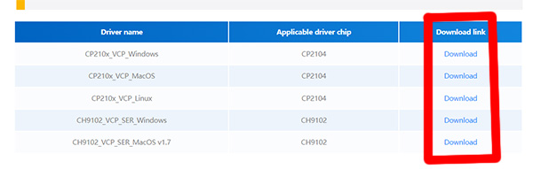
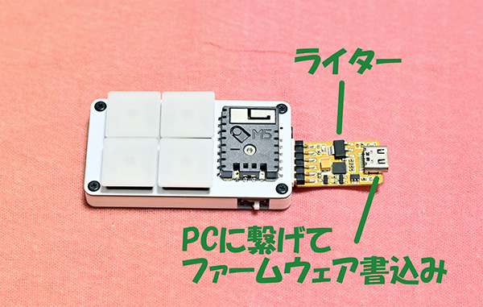

|  |
ライターを使用するにはドライバが必要です。 ドライバは下記サイトから「 CP210x_VCP_*** 」か「 CH9102_VCP_SER_*** 」をダウンロードしてインストールして下さい。 ESP32 Downloader Kit 商品ページ https://docs.m5stack.com/en/accessory/esp32_downloader_kit ※ 商品ページの下の方にドライバのダウンロードリンクがあるのでそちらからダウンロードして下さい。 ※ ロットにより CP2104 か CH9102 のどちらかが使用されている様で、うまく行かない場合は両方をインストールして下さい。 |
|  |
AZ-COREの右横のピンソケットにライターを差し込んで下さい。 ライターは表裏あるので、写真と同じよう実装面が上になるようにして下さい。 ライターのUSBコネクタからPCへ接続します。 接続する時はAZ-COREの電源はOFFにして下さい。 ※ AZ-CORE本体のUSBコネクタは充電用なのでそのままPCに刺しても認識しません。 ※ AZ-CORE本体のUSBコネクタと干渉するので完全には刺さりませんがその状態で大丈夫です。 |